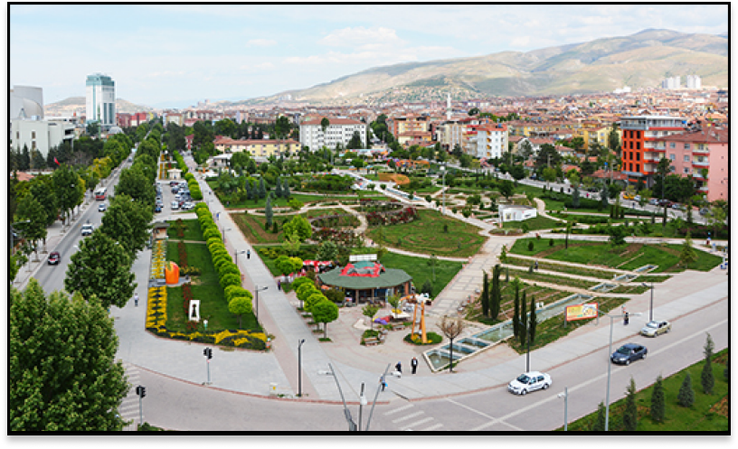
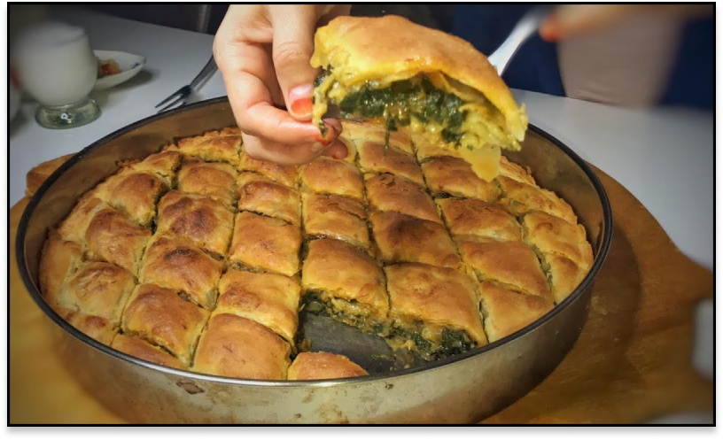
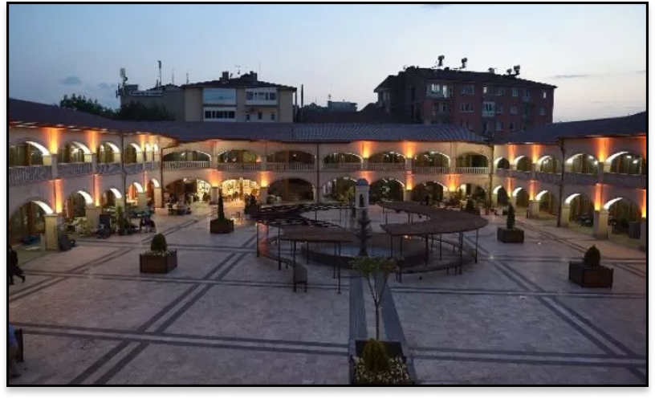
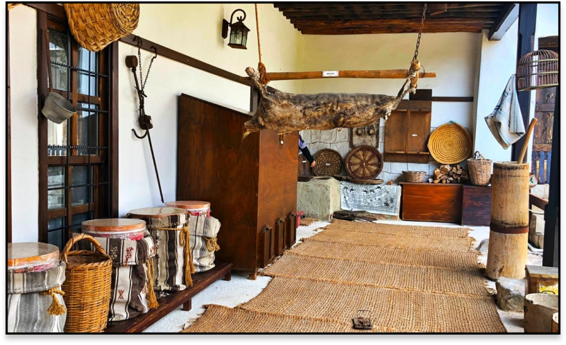
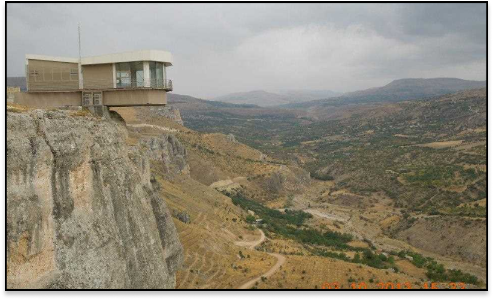
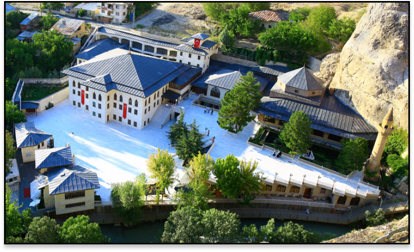
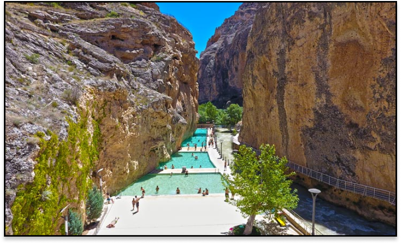
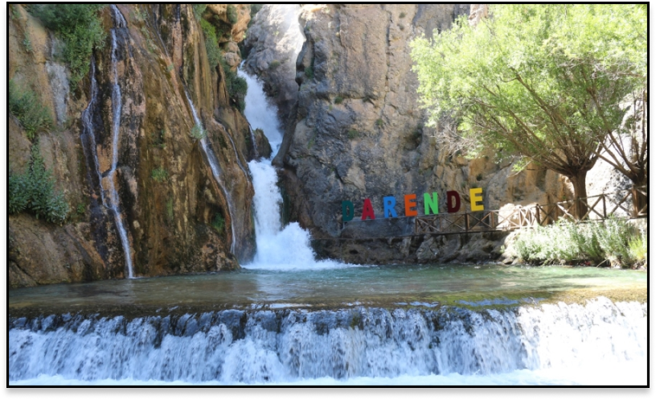

MALATYA
Tarihi
Malatya; Doğu Anadolu Bölgesi'nin ve Fırat Nehri'nin stratejik konumunda yer alan bir yerleşim yeridir. Bu konumu nedeniyle ilk yerleşmeler MÖ 6000'lere gitmektedir. Ayrıca bölge önemli ticaret yolları üzerinden olduğundan dolayı sürekli savaşılmış bir yerdir. Sürekli iki devlet arasında çekişmelere neden olmuştur. Bu durum sonrası şehir her savaş sonrası yağmalanmış, savunma ve istilalardan korunmak için şehir merkezi 2 kez değişim geçirmiştir. Bunun gibi nedenlerden Malatya'nın tarihinin araştırılması çok zordur.
Malatya'nın sınırları içerisinde birçok höyük bulunmaktadır. Bunlardan en eski yerleşmenin görüldüğü yer ve ayrıca Malatya'nın ilk yerleşim alanı olan Arslantepe Höyüğüdür. İlk yerleşim alanı suyun kenarına kurulmuş bir verimli tarım alanıdır. Yaklaşık 6000 yıl kullanıldı. Yaklaşık olarak 35250 m2'lik bir alandır. Bugün ilk yerleşim yeri olan Arslantepe Höyüğü, Orduzu beldesinin Arslantepe mahallesinde bulunmaktadır.
Malatyanın Meşhur Yemekleri
Pirpirim Aşı
Pirpirim yemeği, genellikle semiz otu ile yapılan bir yemektir. Semiz otu, yaprakları etli ve sulu olan bir bitkidir ve genellikle salata veya yemeklerde kullanılır. Pirpirim yemeği genellikle Malatya mutfağında popülerdir.
Semiz otunu yıkayıp temizledikten sonra, sıvı yağda kavrulmuş soğanla birlikte birkaç dakika pişirilir. Tuz, karabiber ve isteğe bağlı baharatları eklenir. Semiz otları yumuşayıncaya kadar karıştırarak pişirilir ve sıcak olarak servis yapılır.
Ispanaklı Kömbe
Malatya'da özellikle kahvaltılarda tercih edilen bir atıştırmalık veya yan lezzet olarak tüketilir. İnce ve gevrek hamurun içine ıspanak, soğan, baharatlar ve bazen de peynir eklenerek yaplır.
Ispanak, bu lezzete özellikleri bir tat ve besleyici özelliklere sahiptir. Ispanak, demir, vitaminler ve antioksidanlar açısından zengin bir sebzedir, bu nedenle Ispanaklı Kömbe sağlıklı bir seçenek olarak kabul edilir.
Gırık
Gırık, Görünüm ve lezzet olarak ekşili sulu köfteyi anımsatan bir tarif. Köfte harcına Malatya'da en bol kullanılan baharatlardan reyhan ve ince bulgur ekleniyor. Güzelce yoğrulup yuvarlanan köfteleri, havuç ve patatesle afiyetle yenesi bir yemeğe dönüşür.
Malatyada Gezilecek Yerler
Şire Pazarı
Şire Pazarı, Malatya’nın kalbinin attığı yer. Tüm alışveriş, ticaret, esnaf kültürü burada yaşanıyor. Günün her saati işlek ve kalabalık.
Kuru kayısı, dut, üzüm, erik, pestil, muska, cevizli sucuk, lokum, pekmez, kuruyemiş gibi Malatya mamüllerinin hepsinin en tazesini burada bulabilirsiniz.
Ertunan (Poyraz) Konağı
Yapım yılı 1890 olduğu tahmin edilen, Osmanlı son dönem sivil mimarisinin bugüne kadar korunarak gelebilmiş bir örneği olan konak, Cumhuriyet’in kurulduğu yıllarda yörenin en güzel yapılarından biridir.
Kerpiç, taş ve ahşap karışımı, iki katlı olan Ertunan Konağı’nda ahşap işçiliği dikkat çekiyor.Cumhuriyetin ilk yıllarında okul olarak hizmet veren konak, Eski Malatya’nın yani Battalgazi bölgesinin ilk okulu.
2011 yılında restorasyon geçiren konakta, mahalle yaşamından kesitler bulabileceğiniz cansız mankenli sahnenler ve dönemin günlük yaşamına dair eşyalar var.
Levent Vadisi ve Seyir Terası
Vadinin görünürlüğünü artırmak ve bu doğa harikasını turizm açısından bir cazibe merkezine dönüştürmek amacıyla, vadide 28 kilometre boyunca uzayan kayalıkların en merkezi noktasına, Malatya Valiliği tarafından seyir terası yaptırılmıştır
Düz bir kaya bloğunun üzerine inşa edilen seyir terası dere yatağından 240 metre yükseklikte olup gözlem terasının 8,5 metresi boşluğa uzanan, çelik konstrüksiyon ve cam ile inşa edilmiş farklı bir proje olup yerli ve yabancı birçok ziyaretçinin ilgi odağı haline gelmiştir.
Darende Somuncu Baba
Somuncubaba, Türbesi ve Camii ile bilinir. Türbenin içinde, Somuncubaba'ya ait bilinen inanılan mezar bulunur. Bu mekân, Müslüman kesimleri için önemli bir ibadet ve ziyaret noktasıdır.
Somuncubaba, Malatya'da tarihi ve dini bir değere sahip olması nedeniyle, bölgedeki dini turizm açısından önemli bir yere sahiptir.
Kudret Havuzu
Darende ilçesinde yer alan bir doğal su yönünde. Hz. İbrahim (as) ile oğlu İsmail'in Mescid-i Haram'da su ararken İsmail'in topuğunun vurduğu yerden çıkan suyun oluşturduğu bir havuz olarak bilinir.
Derinlikleri 80,120 ve 150 cm olan 3 havuzdan oluşur. Havuz girişinde hizmet veren kafede ise hazır yiyecek ve içecek hizmeti verilmektedir.
Çevredeki piknik alanları ve yeşilliklerle birlikte Kudret Havuzu, doğal güzelliklerin tadını çıkarabileceğiniz huzurlu bir ortam sunar.
Günpınar Şelalesi
Malatya'nın Doğanyol ilçesinde yer alan doğal güzellikleriyle ünlü bir şelaledir. Şehir uzunluğunda yaklaşık 40 kilometre uzaklıkta bulunan bu şelale, Fırat Nehri'nin kollarından biri olan Tohma Deresi üzerinde yer almaktadır.
Günpınar Şelalesi, etkileyici bir manzaraya sahiptir ve doğal bir ölüme yer almasıyla birlikte huzurlu bir atmosfer sunar. Günpınar Şelalesi, sevenlerin doğasını ve doğal güzelliklerini görmek isteyenler için popüler bir destinasyondur. Şelalenin piknik alanları ve dinlenme alanları bulunur.